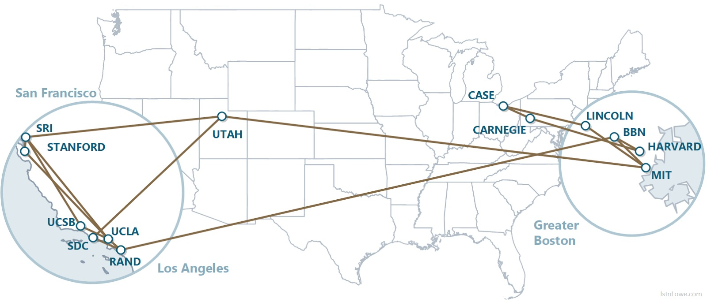

ARPANET
A ARPANET foi a primeira rede de computadores de grande escala e é considerada o principal precursor da internet moderna. Ela foi criada no final da década de 1960 com o objetivo de conectar computadores de diferentes instituições de pesquisa, permitindo o compartilhamento de informações e recursos.
Esse projeto foi financiado pelo governo dos Estados Unidos por meio da ARPA (Advanced Research Projects Agency) e marcou o início da comunicação digital em rede entre computadores localizados em lugares diferentes.
O que foi a ARPANET
A ARPANET era uma rede experimental que conectava computadores de universidades e centros de pesquisa. Seu objetivo era permitir que pesquisadores compartilhassem dados, programas e recursos computacionais de forma mais eficiente.
Antes da ARPANET, os computadores funcionavam de maneira isolada. Com a criação dessa rede, tornou-se possível que diferentes máquinas se comunicassem entre si, enviando e recebendo informações através de linhas de comunicação.
Esse foi um passo fundamental para o desenvolvimento das redes de computadores que existem atualmente.
A primeira conexão entre computadores
A primeira conexão da ARPANET ocorreu em 1969 entre dois computadores localizados em universidades diferentes nos Estados Unidos. O primeiro teste de comunicação aconteceu entre a Universidade da Califórnia em Los Angeles (UCLA) e o Instituto de Pesquisa de Stanford.
Durante esse experimento, pesquisadores tentaram enviar a palavra "LOGIN" de um computador para outro. No entanto, o sistema travou após o envio das duas primeiras letras. Mesmo assim, esse evento é considerado o primeiro passo para o surgimento da internet.
Expansão da rede
Após os primeiros testes bem-sucedidos, a ARPANET começou a crescer rapidamente. Novas universidades e centros de pesquisa passaram a ser conectados à rede, ampliando a troca de informações entre pesquisadores.
Com o passar dos anos, a rede se expandiu para outras regiões e passou a incluir novas tecnologias de comunicação. Esse crescimento foi essencial para o desenvolvimento das redes modernas e para a criação da internet global.
Importância da ARPANET
A ARPANET teve um papel fundamental na história da tecnologia. Ela demonstrou que era possível conectar computadores em uma rede de comunicação eficiente e confiável.
Além disso, muitas das tecnologias utilizadas atualmente na internet foram desenvolvidas ou testadas inicialmente nessa rede experimental. Entre essas tecnologias estão os protocolos de comunicação que permitem o envio de dados entre computadores.
Primeiras instituições conectadas
As primeiras instituições conectadas à ARPANET foram importantes universidades e centros de pesquisa dos Estados Unidos.
Entre elas estavam:
- Universidade da Califórnia em Los Angeles (UCLA)
- Stanford Research Institute
- Universidade da Califórnia em Santa Barbara
- Universidade de Utah
Arpanet em 1970
Após 1 ano da criação da ARPANET ela se encontrava da seguinte maneira:

Voltar para página inicial Voltar para página anterior Ir para próxima página